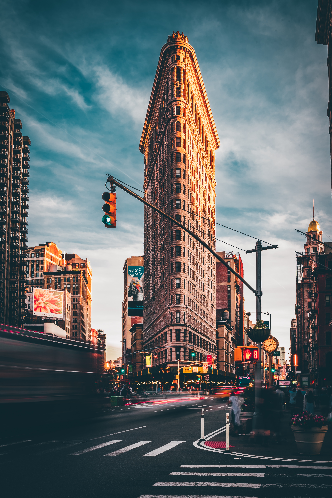

Travel
Seattle


Geographical Location: North America
Seattle, nestled in the Pacific Northwest, harmoniously blends city living with nature's beauty. The iconic Space Needle stands tall, offering sweeping views of mountains and water. Seattle's cultural scene thrives with museums, theaters, and a rich music history, while its commitment to sustainability and outdoor activities makes it a haven for nature lovers
Seattle, birthplace of Starbucks, is a coffee lover's paradise. Distinct neighborhoods like Pioneer Square and Capitol Hill offer diverse experiences, and Pike Place Market bustles with fresh seafood and artisanal goods. Seattle's fusion of innovation, natural allure, and cultural richness makes it a compelling and inviting city.
Photo Gallery
The Space Needle

The Space Needle is an iconice Seattle landmark, soaring above the city with its furturistic design and offering stunning panoramic views of the surround landscape
Pike Place Market

Pike Place Market is a bustling and historic marketplace in Seattle, renown for its vibrant atmosphere, fresh seafood and artisanal goods.
Mt. Rainer

Mount Rainier is a majestic stratovolcano towering over the Pacific Northwest, known for its year-round snow-capped peak and breathtaking alpine landscapes.
New York City


Geographical Location: North America
New York City, often dubbed the "City that Never Sleeps," is a bustling metropolis like no other. Its iconic skyline, dominated by towering skyscrapers like the Empire State Building and One World Trade Center, symbolizes its ceaseless ambition and innovation. The city's cultural diversity is a defining feature, with neighborhoods like Chinatown, Little Italy, and Harlem offering a rich tapestry of traditions and flavors. From the bright lights of Times Square to the tranquility of Central Park, New York City offers a striking blend of urban excitement and natural beauty. It's a place where world-class museums, theaters, and restaurants cater to a global audience, making it a beacon for culture and creativity.
Beyond the surface, New York City's subway system and iconic yellow taxis make it remarkably accessible, allowing residents and visitors alike to explore its diverse offerings. This city is a stage for dreams to be pursued, a canvas for artistry to flourish, and a relentless engine of progress. It's a place where the past meets the future, and where every corner seems to tell a unique story, making New York City an irresistible destination for those seeking inspiration and adventure.
Photo Gallery
Brooklyn Bridge

The Brooklyn Bridge is an iconic suspension bridge spanning the East River, connecting Manhattan and Brooklyn, known for its majestic architecture and historical significance.
Flatiron Building
The Flatiron Building, with its distinctive triangular shape and Beaux-Arts architecture, is a historic landmark nestled in the heart of Manhattan, epitomizing New York City's architectural charm.
Central Park

Central Park is a sprawling urban oasis in the heart of Manhattan, offering a serene escape from the city's hustle and bustle with its lush greenery, scenic waterways, and diverse recreational opportunities.
Chiangmai, Thailand


Geographical Location: Asia
Chiang Mai, nestled in the lush hills of northern Thailand, is a city that captivates with its unique blend of cultural richness and natural beauty. Situated approximately 700 kilometers north of Bangkok, Chiang Mai is the largest city in the region and serves as the capital of the province of the same name. Its geographical location is nothing short of enchanting, surrounded by forested mountains and picturesque landscapes. This charming city, often referred to as the "Rose of the North," offers visitors a delightful escape from the bustling urban life, inviting them to explore a realm where tradition meets modernity amidst a backdrop of stunning scenery.
The heart of Chiang Mai beats with a rich history that dates back over 700 years. Founded in 1296, the city was originally the capital of the ancient Lanna Kingdom. Today, remnants of its storied past are scattered throughout the city, from the ancient temples that dot the landscape to the preserved city walls and moats that harken back to a bygone era. Among the city's treasures is the revered Wat Phra Singh, a 14th-century temple known for its intricate architecture and revered Buddha image. Chiang Mai's historical sites provide a captivating glimpse into its heritage, making it a destination that seamlessly weaves together the past and present for visitors to explore and appreciate.
Photo Gallery
Heart of Chiangmai

In the Heart of Chiangmai, you are able to see hot air balloons.
Elephants

Chiangmai offers events to see animals, including elephants.
Temples

In Chiangmai, there are many ancient temples that are intereting to visit.
Monks

There are many monks in Chiangmai, and it is very important to be and stay respectful.
Food

Chaingmai also offers and has a variety of delicious Thai food, that is an absolute must to try if you visit.